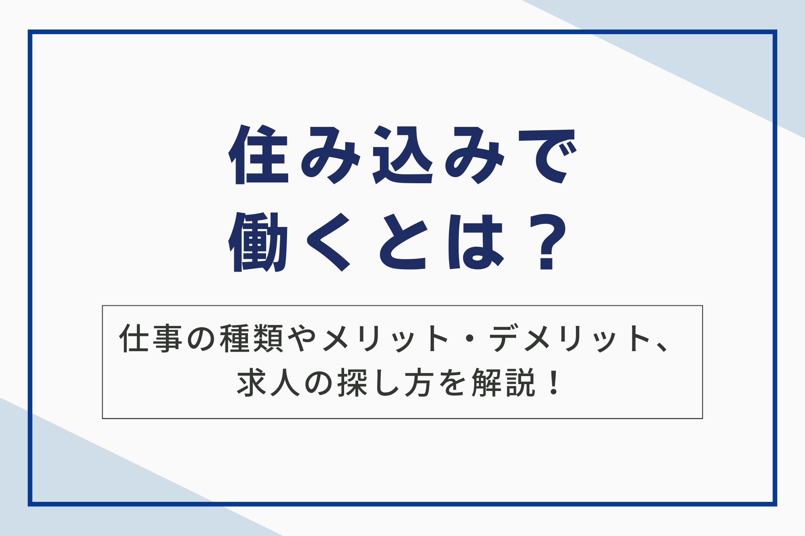

住み込みで働くとは、企業が提供する寮や社宅に住み込み、生活しながら働く雇用形態です。家賃・光熱費・食費が無料または格安になるなど経済的なメリットが大きく、通勤時間ゼロも可能です。
地方での仕事やリゾートバイトなど、新たな生活を始めたい方にも魅力的です。しかし、プライバシーの制限や人間関係のトラブルといったデメリットも存在するため、メリット・デメリットをよく理解した上で検討することが重要です。本記事では、住み込みの仕事の種類、メリット・デメリット、求人の探し方などを詳しく解説します。

住み込みで働くとは？
住み込みとは、企業などが提供する寮や社宅などの住居に住みながら働く雇用形態です。
仕事の内容や勤務地によっては、住居費が無料、あるいは非常に安価に設定されているケースが一般的です。現代社会において、住み込みという働き方は様々な理由で需要が高まっています。
地方の人口減少や都市部への人口集中により、地方企業では人材確保が困難になりました。住み込みという形で住居を提供することで、遠方からの就労を希望する人にとって魅力的な選択肢となり、企業側も人材を確保しやすくなります。
また、住み込みは働き手側にもメリットがあります。家賃や光熱費などの生活コストを抑えることができ、貯蓄をしたい人や経済的な負担を軽減したい人に向いています。さらに、通勤時間が短縮されるため、時間を有効活用できる点も魅力です。

現代における住み込みの需要
近年、働き方の多様化に伴い、住み込みという働き方も需要の変化を見せています。一昔前までは、住み込みといえば地方の工場や旅館などが主な仕事先でしたが、現在は多様な職種で住み込みの求人が見られるようになりました。
また、住み込みの需要は地域によっても異なります。地方では人手不足が深刻化しているため、住み込みの求人が増加傾向にあります。特に、観光業や農業、介護業などでは、住み込みで働く人が貴重な労働力です。
働き方の多様化や地方の人手不足といった背景から、住み込みという働き方は今後も一定の需要が見込まれます。特に、地方創生や地域活性化の観点からも、住み込みという働き方は注目されています。
住み込みの種類と仕事内容
住み込みの仕事には様々な種類があり、それぞれに特徴があります。いくつか代表的な種類と仕事内容を以下にまとめました。
リゾートバイト
リゾートバイトは、短期的に観光地のリゾート施設で働く住み込みの仕事です。住み込みという形態のため、家賃や光熱費、食費が無料または非常に安価に抑えられる点が大きなメリットです。
仕事内容は、ホテルや旅館の接客、レストランのホールスタッフ、スキー場のインストラクター、テーマパークのスタッフなど多岐にわたります。肉体的にハードな場合もありますが、新しい出会いや経験を通して成長できる貴重な機会となるでしょう。
また、リゾートバイトは学生やフリーターだけでなく、社会人にとっても魅力的な選択肢です。普段の生活から離れ、非日常的な空間で働くことで、リフレッシュ効果も期待できます。
期間工
期間工とは、一定期間の雇用契約を結んで工場で働く人のことです。期間従業員とも呼ばれます。
自動車、家電、機械などの製造工場で多く募集されており、住み込みで働くことが一般的です。仕事内容は、組立・加工・検査・梱包など、工場によって様々です。特別な資格や経験は必要なく、未経験者でも応募できる求人が多くあります。
期間工は、短期間で集中的に稼ぎたい人や、製造業の現場を経験したい人に向いています。体力に自信があり、契約期間が限られていることを理解した上で応募すれば、大きなメリットを得られるでしょう。
関連記事：【プロが教える】期間工の年収は高い？月収例や年収アップのコツも紹介！ – 株式会社ベルジャパン
マンション管理人
マンション管理人は、マンション住民の快適で安全な生活を支える仕事です。日々の業務内容は多岐に渡り、建物の設備管理から住民対応まで様々な役割を担います。
具体的には、共用部分の清掃、設備の点検・修繕、業者への連絡・手配、ゴミ出しの管理、居住者からの問い合わせ対応などがあります。また、マンションのセキュリティ維持も重要な任務です。
不勤務形態は住み込みや常駐、巡回の3種類があり、マンションの規模や特性によって異なります。住み込みの場合は、マンションに居住スペースが提供され、緊急時にも迅速に対応できます。
また、常駐勤務は日勤や夜勤など、決められた時間帯での勤務となります。巡回勤務の場合は、複数のマンションを担当し、定期的に巡回して管理業務を行います。
農業・漁業
農業や漁業の分野でも住み込みで働く求人は多く存在します。地方の農家や漁師さんのもとで働きながら、生活の場も提供してもらえるスタイルです。
住み込みで働くことで、地方での生活を体験できるというメリットもあります。農業では、農作物の栽培・収穫・出荷作業など、漁業では、魚の養殖・漁獲・加工など、仕事内容は多岐にわたります。
介護職
住み込みで働く介護職は、利用者の自宅に居住しながら介護サービスを提供します。住み込み介護は、24時間体制でケアが必要な方にとって、大きな安心感につながります。
住み込み介護は、利用者にとっては、常に介護者がいる安心感を得られる一方、介護者にとっては、生活空間と仕事場が一体となるため、オンオフの切り替えが難しく、プライバシーの確保も課題となります。
そのため、労働時間や休日、プライバシーの確保について、事前にしっかりと確認し、契約内容を明確にすることが大切です。
建設業
建設業界は慢性的な人手不足に悩まされており、住み込みで働ける求人が多くあります。肉体労働が中心となるため体力的に大変な仕事ですが、未経験者でも就業可能な現場も多く、手に職をつけたいと考えている方にはおすすめです。
建設業は肉体労働が中心となるため、体力に自信のある方に向いています。また、資格を取得してより専門的な仕事に就き、収入をアップさせることも可能です。住み込みで働くことで、地方の現場でも仕事がしやすくなります。
住み込みで働くメリットは5つ
住み込みで働くことのメリットは、金銭面、時間面、環境面など多岐にわたります。ここでは6つのメリットを詳しく見ていきましょう。
1.家賃・光熱費を節約できる
住み込みで働く最大のメリットは、家賃と光熱費を大幅に節約できる点です。通常、住み込みの仕事では、職場が提供する寮や社宅に住むことになります。
これらの住居は家賃が無料、もしくは相場よりもかなり低価格に設定されている場合がほとんどです。家賃が無料になるだけで、毎月数万円の出費を抑えることができます。
また、光熱費についても家賃に含まれているケースや、無料もしくは格安で提供されるケースが多く、更なる節約効果が期待できます。これらの費用が浮くことで、自由に使えるお金が増え、生活の質を向上させたり、趣味や旅行など自分の好きなことに費やしたりできます。
2.食費を節約できる
住み込みで働く大きなメリットの1つとして、食費の節約が挙げられます。
住み込みの仕事の中には、食事を提供してくれる職場があるためです。毎日仕事で疲れて帰ってきてから自炊をするのは大変ですし、外食ばかりでは食費がかさんでしまいます。
自炊や外食に比べ、食事補助を利用することで食費を大幅に抑えられます。節約できたお金は貯金に回したり、趣味や旅行などに使ったりできるでしょう。
ただし、住み込みの仕事で食事補助が必ずあるとは限りません。食費がどの程度補助されるかは、仕事内容や職場によって異なります。事前に確認しておくことが大切です。
3.通勤時間の短縮・解消につながる
住み込みで働く最大のメリットの1つは、通勤時間を大幅に短縮、あるいは解消できる点です。
通勤時間ゼロを実現できれば、毎日の生活にゆとりが生まれます。たとえば、満員電車でのストレスから解放されたり、朝の貴重な時間を有効活用できたりします。
また、毎日の通勤時間を短縮することで、体への負担も軽減されます。特に、肉体労働に従事している方にとっては、通勤による疲労の蓄積は大きな負担となるでしょう。住み込みであれば、職場まで徒歩圏内なので、体への負担を最小限に抑えられます。
4.新しい環境での生活をスタートできる
住み込みという働き方は、必然的に新しい環境での生活をスタートさせることになります。地方出身者であれば都会での生活を、都会出身者であれば地方での生活を経験することになるでしょう。
今までとは異なる文化や価値観に触れることで、視野が広がり、人間的にも大きく成長できるはずです。住み込みという働き方は、新しい環境での生活を通して、自己成長を促進する絶好の機会となります。
5.人間関係を構築しやすい
住み込みという環境は、職場だけでなく生活の場も共有するため、必然的に人間関係が濃密になります。同僚と寝食を共にするため、家族のような強い絆を築ける可能性があります。
仕事上の相談はもちろんのこと、プライベートな悩みも共有できる仲間ができることは大きなメリットと言えるでしょう。特に地方やリゾート地など、新しい土地で働く場合は、心強い支えとなるはずです。
一方で、人間関係のトラブルのリスクも高まります。四六時中一緒にいることで、些細なことが原因で衝突してしまう可能性も否定できません。また、共同生活であるがゆえに、プライバシーの確保が難しいという側面もあります。
良好な人間関係を築くにはお互いを尊重し、コミュニケーションを密にすることが重要です。
住み込みで働くデメリットは5つ
家賃や光熱費が抑えられる、通勤時間が短縮できるなど多くのメリットがある一方で、住み込みであるがゆえのデメリットも存在します。主なデメリットとして下記の5つが挙げられます。
1.プライバシーが制限される
住み込みで働く上で、特に気になる点としてプライバシーの問題が挙げられます。共同生活であるが故に、個室であっても十分なプライベート空間が確保できないのではないかと不安に感じる方もいるでしょう。
共有スペースの多さや、施設内での生活音、他人との距離の近さなども懸念材料となるかもしれません。実際に、プライバシーに関する問題は、住み込みを選択する上での大きな障壁となる可能性があります。
しかし、多くの住み込み施設では、個室の提供が一般的です。各部屋に鍵が設置されているなど、個々のプライバシーに配慮した環境が整備されている場合も少なくありません。
また、施設によっては、共有スペースの利用時間やルールを定めることで、プライバシーへの配慮を行っているところもあります。
2.人間関係のトラブルが生じる場合がある
住み込みの場合、仕事仲間と生活空間を共有するため、人間関係のトラブルは少なからず発生する可能性があります。以下にそのケースと対処法をまとめました。
| ケース | 対処法 |
|---|---|
| 同僚との生活リズムの違い | 話し合いで解決可能な場合は、お互いに歩み寄る姿勢を見せ、妥協点を探る。 |
| 共有スペースの使い方をめぐる問題 | 当番制を導入したり、使用ルールを明確にすることでトラブルを未然に防ぐ。 |
| 些細なことから発展するトラブル | 感情的にならず、冷静に話し合うことが大切。第三者に間に入ってもらうのも有効な手段。 |
| 深刻なトラブルに発展した場合 | 寮の管理者や会社の担当者に相談し、適切な対応を求める。 |
住み込みで働く際は、良好な人間関係を築くための努力を惜しまないことが重要です。
3.仕事内容によっては肉体的な負担が大きい
住み込みの仕事は、業種によっては肉体的な負担が大きい場合があります。肉体労働に従事する場合、長時間の立ち仕事や重い荷物の運搬など、体力を必要とする作業が多いです。
肉体労働できつい思いをしたくない方は、応募前に仕事内容をよく確認することが大切です。また、肉体的な負担が大きい仕事では、ケガのリスクも高まります。安全に作業を行うための研修やマニュアルが用意されている職場を選びましょう。
もし、住み込みの仕事で肉体的な負担を感じた場合は、無理をせずに同僚や上司に相談することが大切です。
4.職場と生活空間の近さによるストレスが生じる
職場と住居が同じ敷地内、あるいは非常に近い場所にある場合、仕事とプライベートの境界線が曖昧になりやすいです。これはメリットでもありデメリットでもあります。
常に仕事のことを意識してしまうと精神的な負担が大きくなり、ストレスを感じやすくなります。また、職場の人間関係がプライベートにも影響することで、人間関係のトラブルがより深刻化してしまうケースも少なくありません。
このような状況を避けるためには、意識的にオンとオフを切り替える工夫が必要です。仕事とプライベートのバランスをうまく保つことで、職場と生活空間が近いという環境を快適なものにすることができるでしょう。
5.転職しにくい
住み込みの仕事は、転職活動において不利になる点がいくつかあります。転職活動中は、住居の確保が重要になります。
住み込みの場合、退職と同時に住居を失うため、転職活動中に住む場所を確保する必要があります。特に、住み込みの仕事は地方やリゾート地にあることが多く、転職先の選択肢が限られる場合もあります。
また、住み込みの仕事は、人間関係が濃密になりやすい環境です。同僚とのトラブルや、人間関係のストレスから転職を考える人も少なくありません。
しかし、転職活動中に、人間関係のトラブルについて聞かれた場合、ネガティブな印象を与えてしまう可能性があります。転職を考えている人は、これらのデメリットを理解した上で、住み込みの仕事を選ぶ必要があります。
住み込みの求人の探し方
住み込みで働きたい場合、求人を探す方法はいくつかあります。自分に合った探し方を見つけることが、希望の仕事を見つける近道です。
インターネットの求人サイト
インターネットを活用した求人サイトは、住み込みの仕事を探す上で非常に便利なツールです。
住み込み求人に特化した専門サイトから、幅広い求人を扱う総合サイトまで、多様な選択肢があります。それぞれの特徴を理解して、自分に合ったサイトを利用することで、効率的に仕事探しを進めることができます。
| サイトの種類 | 特徴 | メリット | デメリット |
|---|---|---|---|
| 専門サイト | 住み込み求人に特化 | 職種や地域を絞り込みやすい | 掲載求人数が少ない場合もある |
| 総合サイト | 幅広い求人が掲載 | 多様な仕事から選べる | 住み込み求人が探しにくい場合もある |
どちらのタイプのサイトも、求人情報の詳細を確認できるだけでなく、応募もサイト上で行えるのが一般的です。サイトによっては、企業の担当者と直接メッセージをやり取りできる機能や、応募書類の作成をサポートする機能なども提供されているので、積極的に活用してみましょう。
ハローワーク
ハローワークは、住み込みの仕事を探す上で有効な手段の一つです。厚生労働省が運営する公共職業安定所で、全国各地に設置されています。
ハローワークでは求人情報の提供だけでなく、職業相談や職業訓練などのサービスも提供しています。窓口で相談員に希望条件を伝えることで、条件に合った求人を紹介してもらえるでしょう。
ハローワークの求人票には、「住み込み ○人」という表記の他に、「通勤・不問」という表記がある場合があります。「通勤・不問」とは、通勤を希望する人も、住み込みを希望する人も応募可能であることを意味します。
つまり、住居の提供の有無を選べるということです。住み込みの仕事を探している方は、ハローワークの利用を検討してみてはいかがでしょうか。
知人・友人からの紹介
住み込みの仕事を探す方法の一つとして、知人や友人からの紹介があります。身近な人が既に住み込みで働いている場合、リアルな仕事内容や職場の雰囲気、寮の環境などを聞くことができるため、ミスマッチを防ぐことができます。
求人サイトやハローワークでは得られない生の情報を得られるメリットがあるため、積極的に活用していくと良いでしょう。
ただし、知人・友人の紹介だけに頼ると仕事の選択肢が狭まってしまう可能性があります。また、紹介された仕事が必ずしも自分に合うとは限らないため、他の求人探しと並行して行うことが大切です。
有料職業紹介事業者
有料職業紹介事業とは、厚生労働大臣の許可を受けた事業者が、求職者と求人企業の間を取り持ち、求職者の就職をあっせんするサービスです。
住み込みの仕事を探す際に、有料職業紹介事業を利用するメリットは、専門のアドバイザーが求職者の希望や条件に合った仕事を紹介してくれる点です。また、求人企業との面接設定や条件交渉なども代行してくれるため、求職者はスムーズに就職活動を進めることができます。
特に住み込みの仕事は、一般の求人サイトには掲載されていないような非公開求人が多い傾向にあります。有料職業紹介事業であれば、これらの非公開求人を紹介してもらえる可能性が高く、より多くの選択肢の中から仕事を選べます。⇛ベルジャパンに相談する
住み込みでよくある3つの質問
住み込みの仕事には様々な疑問がつきものです。ここではよくある質問を3つ紹介し、それぞれ解説していきます。
質問1.住み込みの仕事は誰でもできる？
住み込みの仕事は、業種や職種によって求められるスキルや経験が異なります。特別な資格や経験がなくてもできる仕事も多いですが、体力が必要な仕事や専門知識が必要な仕事もあります。そのため、ご自身のスキルや経験、適性に合わせて仕事を選ぶことが大切です。
質問2.プライベートの時間はある？
住み込みの仕事は、職場と住まいが近い分、プライベートの時間が少ないと感じる方もいるかもしれません。しかし、勤務時間外は基本的に自由時間です。
休日はもちろんのこと、勤務時間外にも自分の趣味や勉強など、自由に時間を過ごすことができます。
質問3.住み込みの仕事で人間関係に悩んだ場合はどうすればいい？
住み込みの仕事では、職場だけでなく生活空間も共有するため、人間関係のトラブルは少なからず発生します。もし人間関係で悩んだ場合は一人で抱え込まずに、同僚や上司、または相談窓口などに相談してみましょう。
まとめ
住み込みで働くとは、企業が提供する寮や社宅に住みながら仕事をする雇用形態です。家賃や光熱費、食費が無料または格安になるなど金銭的なメリットが大きく、通勤時間を短縮・解消できる、新しい環境で生活を始められるといったメリットもあります。
一方、プライバシーの制限、人間関係のトラブル、仕事内容によっては肉体的な負担が大きい、職場と生活空間の近さによるストレス、転職の難しさといったデメリットも存在します。
なお、株式会社ベルジャパンは、有料職業紹介業のなかでも豊富な実績ときめ細やかなサポート体制を強みとしており、求職者・企業双方から高い評価をいただいております。独自のネットワークを活かして非公開求人を含む多様な案件をご紹介できる点が大きな特長です。
さらに、専任コンサルタントがキャリアやスキル、ライフスタイルなどを詳しくヒアリングすることで、一人ひとりに最適化されたサポートを実現しています。⇛ベルジャパンに相談する